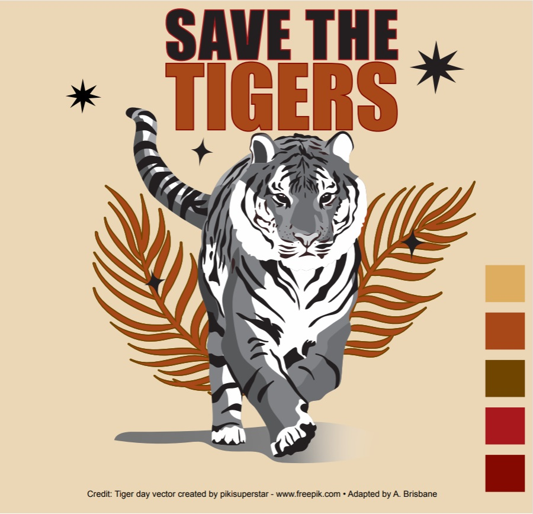
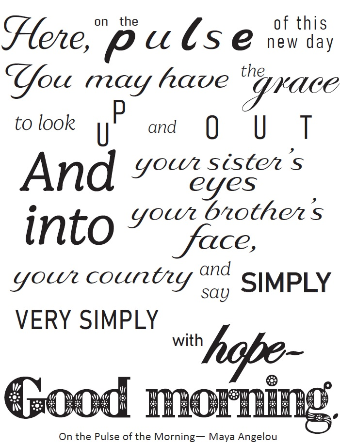

FUNDAMENTALS OF DESIGN
I. Call to Action poster
The assignment given was an instruction to create a 'Save the Tigers' call to action poster.
The black and white image is from freepick and I used Adobe Illustrator to colorize.
Each color used was chosen intentionally.
Orange is the color of the standard tiger that most people may think of
when they hear it. Further, research shows that warm colors (orange, red, etc) are associated with strong
feelings, with orange eliciting responses of power and anger (MasterClass). While I did not want the actual image of the
feline to be
colored, the colors would elicit a response in the viewer. I also added a slight outline in the words ‘Save
the’ in red
so as bring attention to the words, but not take attention away from the rest of the image.
For the palette type, I chose analogous because the colors balanced better and provides just enough difference in the colors to give an overall aesthetic without drawing eyes away from the main subject of the poster – the tiger.
II. Typography in Design
The verse design is for a portion of Maya Angelou's poem "On the Pulse of Morning" (read full version) I chose a font combination of Delaney, Edwardian Script, Bahnschrift, Gelica ExtraLight Italic, and Decorative. Delaney is a light script font that exhibits the flow of poetry verses while still allowing the text to be read. The Bahnschrift and Gelica ExtraLight Italic fonts allow for reading of the lines without taking away from the message. Edwardian Script is used for elegance and was used just for the words ‘grace’ and ‘hope’. Lastly, the Decorative text brings the verse to a close using text that has ray-like design elements that are meant to reflect ‘Good morning’.
